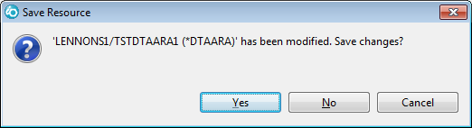
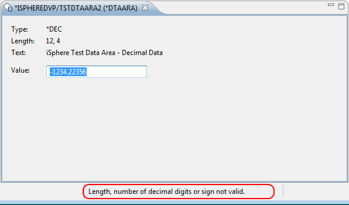
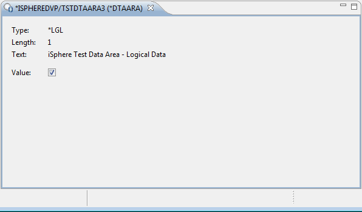
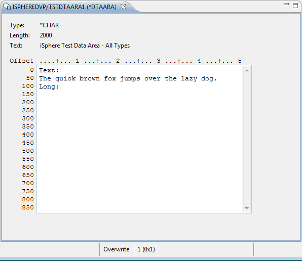
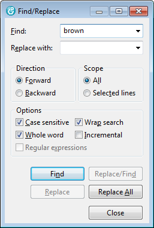

This tool works well for *DEC and *LGL data areas and for simple *CHAR data areas.
If you have a *CHAR data area with multiple fields, consider the Data Space Editor, where you can define a layout for the data area using the iSphere Data Space Editor Designer.
There is a separate editor for each of the data area types.
In case you defined a data space editor, a popup dialog for selecting the editor will be displayed. Press the [Cancel] button to use the default data area editor.
After you have made your edits, close the editor and you will be prompted to save the changes:

Any errors are shown at the bottom of the screen and you will be unable to save the changes.



The status bar at the bottom of the editor shows the cursor position and if the editor is in "Insert" or "Overwrite" mode. Toggle with the "Insert" key.
The editor utilizes the Eclipse Search & Replace action. Search & Replace can be started from the menu or by the associated shortcut, which is usually CTRL+f.

Instead of using the native data area editor you can take advantage of the Data Space Editor, the layouts for which are created and maintained by the iSphere Data Space Editor Designer.